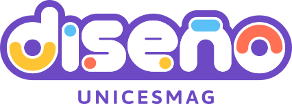

Base en Bellas Artes
Dibujo, morfología, ilustración y fotografía sostienen la mirada plástica del diseñador: primero el criterio visual, luego el software.
Admisiones abiertas · Pasto, Colombia
Programa de Diseño Gráfico · Facultad de Arquitectura y Bellas Artes · Universidad CESMAG
El ADN del programa
Dibujo, morfología, ilustración y fotografía sostienen la mirada plástica del diseñador: primero el criterio visual, luego el software.
8 talleres troncales de diseño (Diseño I a VIII), práctica empresarial y proyecto de grado con proyectos reales.
Patrimonio visual andino, diseño social y diálogo con las comunidades del suroccidente colombiano.
Visión franciscana de servicio ético, accesibilidad, empatía social y compromiso con la región.

Galería de Taller
Creación real desde los primeros semestres hasta la sustentación pública de grado.
Tecnología & Oficio Real
Lo que aprendes y utilizas desde el primer semestre: las aplicaciones estándar de la industria creativa mundial y los talleres de producción análoga.
Noticias & Eventos
Presencia Institucional & Contacto Directo
Puertas abiertas para estudiantes y aspirantes, acompañamiento docente cercano y asesoría personalizada para tu ingreso.
Calle 12 No. 22F–16, San Juan de Pasto, Nariño, Colombia
Horario de atención: Lunes a Viernes · 8:00 a.m. a 12:00 m. y 2:00 p.m. a 6:00 p.m.
Completa tus datos y la secretaría del programa te responderá de forma personalizada por WhatsApp.